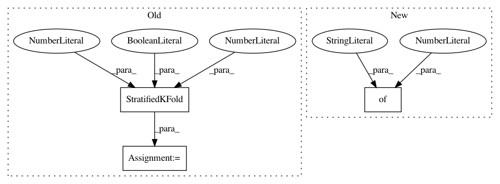

7ffde8f8c6e951c58ce2ecd43c3c29beeb9cac8c,test/test_evaluation/test_train_evaluator.py,TestTrainEvaluator,test_partial_cv,#TestTrainEvaluator#Any#,313
Before Change
@unittest.mock.patch("autosklearn.pipeline.classification.SimpleClassificationPipeline")
def test_partial_cv(self, pipeline_mock):
D = get_binary_classification_datamanager()
kfold = StratifiedKFold(random_state=1, n_splits=5, shuffle=True)
pipeline_mock.predict_proba.side_effect = lambda X, batch_size: np.tile([0.6, 0.4], (len(X), 1))
pipeline_mock.side_effect = lambda **kwargs: pipeline_mock
pipeline_mock.get_additional_run_info.return_value = None
After Change
evaluator = TrainEvaluator(D, backend_api, queue_,
configuration=configuration,
resampling_strategy="partial-cv",
resampling_strategy_args={"folds": 5},
all_scoring_functions=False,
output_y_hat_optimization=True,
metric=accuracy)
In pattern: SUPERPATTERN
Frequency: 3
Non-data size: 3
Instances
Project Name: automl/auto-sklearn
Commit Name: 7ffde8f8c6e951c58ce2ecd43c3c29beeb9cac8c
Time: 2017-11-30
Author: feurerm@informatik.uni-freiburg.de
File Name: test/test_evaluation/test_train_evaluator.py
Class Name: TestTrainEvaluator
Method Name: test_partial_cv
Project Name: automl/auto-sklearn
Commit Name: 7ffde8f8c6e951c58ce2ecd43c3c29beeb9cac8c
Time: 2017-11-30
Author: feurerm@informatik.uni-freiburg.de
File Name: test/test_evaluation/test_train_evaluator.py
Class Name: TestTrainEvaluator
Method Name: test_cv
Project Name: automl/auto-sklearn
Commit Name: 7ffde8f8c6e951c58ce2ecd43c3c29beeb9cac8c
Time: 2017-11-30
Author: feurerm@informatik.uni-freiburg.de
File Name: test/test_evaluation/test_train_evaluator.py
Class Name: FunctionsTest
Method Name: test_eval_partial_cv